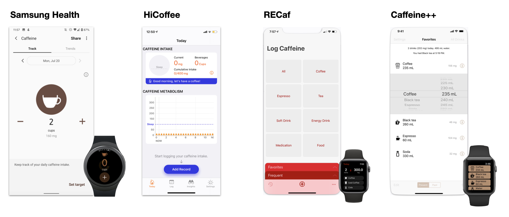
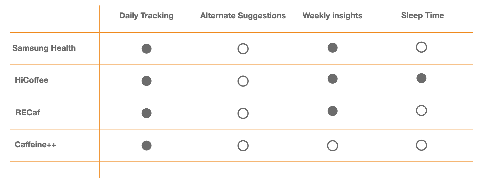
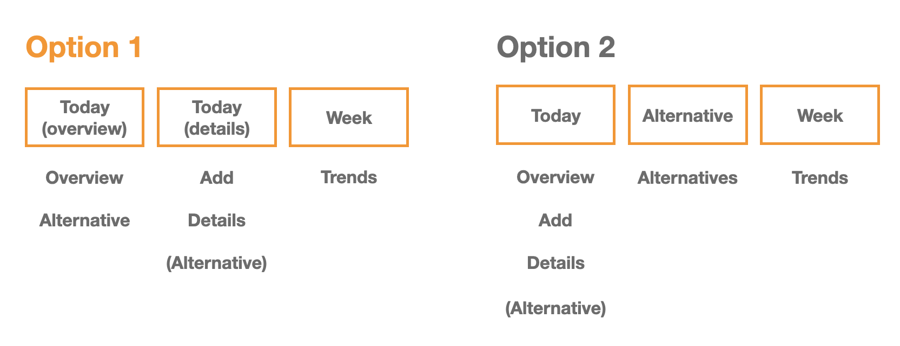

Caffeine App for Apple Watch
Product Design • Side Project • 1 week October 2020
Overview
In this project, I designed the end-to-end coffee caffeine tracker app for Apple Watch. After research I found that people find it difficult to break coffee consumption habits. I designed a solution that provides users healthy alternatives to disencourage excess caffeine consumption.
Research
Background Research: Risks of excess caffeine intake
- Liver damage
- Increase blood pressure
- Headache
- Anxiety
- Insomnia
User Research
I interviewed 3 people who drink Coffee on a day to day basis understand their pain-points and discover the problem.
Key Insights
- People are unaware of the recommended caffeine intake “When I’m drinking coffee, I don’t realize I am drinking too much and I’m not sure how much is recommended”
- People don't feel the need to stop drinking coffee until they experience a health problem "I don't feel the need to stop drinking coffee until I experience a headache”
- People who drink too much coffee drink it as a habit “I drink coffee because its just become part of my work routine.”
Define
Problem Statement:
Target Audience:
Ideation
Brain storming: Actionable Insights
How might we help users limit excess caffeine intake?

Competitive Analysis
I took a look at other caffeine tracking apps to identify strenghts and weaknesses on how they are solving the problem. I compared whether my selected problem solution is used in the 4 apps I chose to analyze.
I found that most apps provide a way to track consumption but they do not provide a way to disencourage excess caffeine consumption.
Problem Solution: Caffeine tracker app that suggests other healthy alternatives when consumed over the targeted limit
- Why wearable technology? Wearable tech brings convenience, real-time tracking, and efficiency.
User Persona
Build, Test, Iterate
Pen and Pencil Sketches

Information Architechture
Design Iterations
The breadth of my design iterations can be found here.